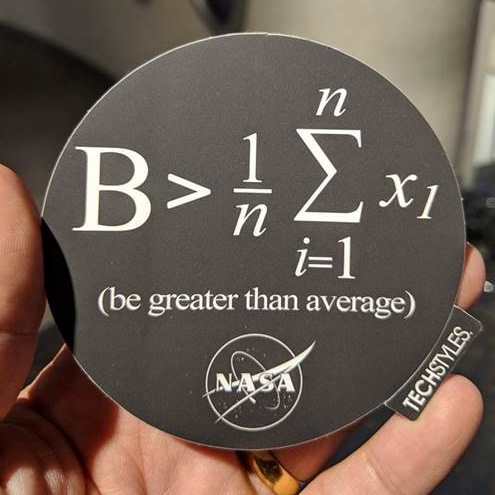

Review: Summation Notation
The Fibonnaci Sequence \(\{1, 1, 2, 3, 5, 8, 13, ...\}\) is an example of a sequence where
\(F_{1} = 1, F_{2} = 1, F_{n} = F_{n-1} + F_{n-2}\)
Compute
- \(\displaystyle\sum_{i=1}^{1} a_{i}\)
- \(\displaystyle\sum_{i=1}^{2} a_{i}\)
- \(\displaystyle\sum_{i=1}^{3} a_{i}\)
- \(\displaystyle\sum_{i=1}^{4} a_{i}\)
Populations versus Samples
We tend to study a relatively small sample to understand the behavior of a much larger population.
Mean (Average)
“mean” and “average” are synonymous and will be used interchangably
The mean of \(\{ x_{1}, x_{2}, ..., x_{n} \}\) is denoted by
- Greek letter \(\mu\) (“mu”) for a population mean (where we know all of the elements)
- Anglicized \(\bar{x}\) (“x bar”) for a sample mean (where we are working with a sample of data)
To calculate the mean
- Add up all of the numbers
- Divide by the amount of numbers
\[\mu = \displaystyle\frac{1}{N}\displaystyle\sum_{i=1}^{N} x_{i} \quad\text{or}\quad \bar{x} = \displaystyle\frac{1}{n}\displaystyle\sum_{i=1}^{n} x_{i}\]
Example: One Die
- Find the mean of the roll of one six-sided die.
- Find the mean of the sample \(\{21, 22, 23, 32\}\).
Median
The median of an ordered, discrete set of numbers is the number in the middle. If there are an even amount of data, then the median is the average of the middle two numbers in the ordered data set.
- Compute the median of \(\{1, 2, 1, 5, 3\}\)
- Compute the median of \(\{1, 1, 2, 3, 5, 8\}\)
Weighted Mean
\[\bar{x} = \displaystyle\frac{ \displaystyle\sum_{i=1}^{n} {\color{red}w_{i}} \cdot {\color{blue}x_{i}} }{ \displaystyle\sum_{i=1}^{n} {\color{red}w_{i}} }\]
Example: Cal Kulas
Setting
Going into the final exam for a Statistics course, Cal Kulas had earned the following marks in the other categories.
Tasks
- What is his current grade in the course?
- What does Cal Kulas need on the final exam so that he earns at least 80% in the course?
Review: Summation Notation
The Fibonnaci Sequence \(\{1, 1, 2, 3, 5, 8, 13, ...\}\) is an example of a sequence where
\(F_{1} = 1, F_{2} = 1, F_{n} = F_{n-1} + F_{n-2}\)
Compute
- \(\displaystyle\prod_{i=1}^{1} a_{i}\)
- \(\displaystyle\prod_{i=1}^{2} a_{i}\)
- \(\displaystyle\prod_{i=1}^{3} a_{i}\)
- \(\displaystyle\prod_{i=1}^{4} a_{i}\)
For Formulas
In particular, sigma and product notation will allow us to express probability formulas more efficiently. For example, the independence formula for two events \(A\) and \(B\),
\[P(AB) = P(A) \cdot P(B)\] becomes the following for \(n\) independent events:
\[P\left( \{X_{i}\}_{i=1}^{n} \right) = \displaystyle\prod_{i=1}^{n} P(X_{i})\]
Looking Ahead
- due Fri., Feb. 3:
- WHW3
- JHW1
- Identity Statement (short essay)
- and the before-lecture quizzes
Exam 1 will be on Wed., Mar. 1
Discussion section 24D (Wed., 530 PM) now meets in GRAN 135
